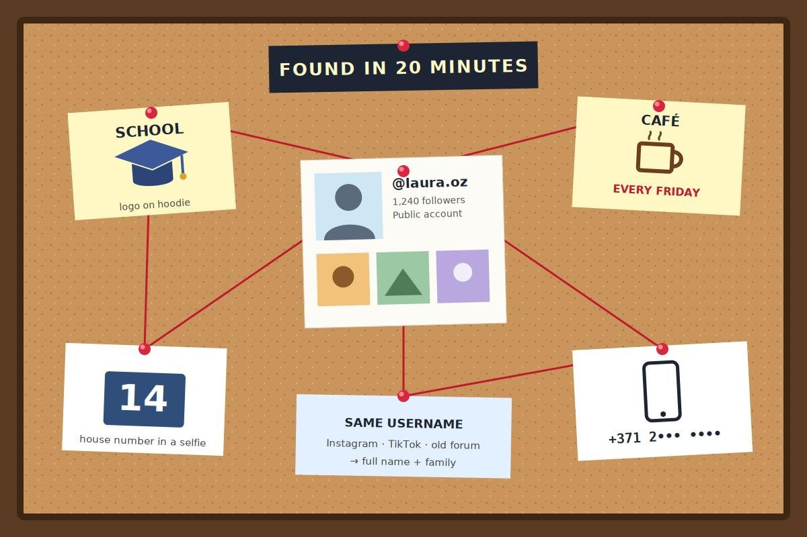
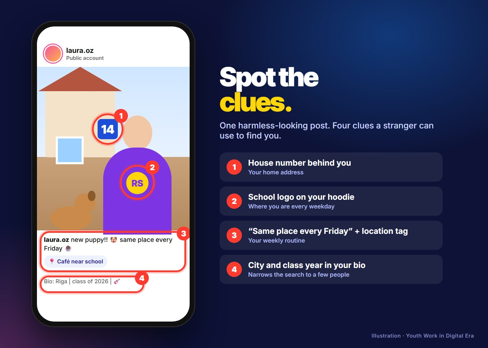

02 · Historia
Jak obca osoba znalazłaLaurę w 20 minut.
Laura ma 18 lat. Jej Instagram jest publiczny, ale ona uważa, że nigdy nie udostępnia niczego prywatnego.
Pewnego wieczoru publikuje selfie z nowym szczeniakiem. W tle widać logo jej szkoły na bluzie. W opisie profilu ma „Ryga | rocznik 2026 | 🎸”. W zeszłym tygodniu wrzuciła relację z ulubionej kawiarni z oznaczoną lokalizacją i podpisem „to samo miejsce w każdy piątek ☕”.
Obcy mężczyzna przegląda jej profil. Z bluzy dowiaduje się, do jakiej szkoły chodzi. Dzięki oznaczeniu kawiarni wie, gdzie Laura bywa w każdy piątek. Na zdjęciu z urodzin widać za nią numer domu. Jej stare konto na TikToku, z tą samą nazwą użytkownika, pokazuje w komentarzach jej imię i nazwisko oraz imię jej mamy. Szybkie wyszukanie tej nazwy użytkownika prowadzi do trzyletniego wpisu na forum z jej numerem telefonu.
W 20 minut, bez żadnego włamania, obcy człowiek zna jej imię i nazwisko, szkołę, adres, numer telefonu i tygodniowy rozkład dnia.




Sedno sprawyNic nie zostało skradzione. Laura sama udostępniła każdy element, post po poście. Tak właśnie działa OSINT.